Tailwind
Hecho por:
María Angélica Solís Sibaja
Dereck Jimenéz Rodríguez
Jose Mario Cubillo Gutierrez
Cristel Yuliana Meléndez Jiménez
Erin Stella Huang Lin
Sistema de Layout y Espaciado
Sistema de Cuadrícula
Elementos principales del grid:
Principal: "grid" para activar el modo grid layout.
a. grid-cols-n
b. grid-rows-n
c. grid-flow-row
d. grid-flow-col
e. gap-size
f. gap-x-size
g. gap-y-size
Ejemplos:


Posicionamiento de Elementos:
a. col-span-n
b. col-start-n
c. col-end-n
d. row-span-n
e. row-start-n
f. row-end-n
g. auto-cols-value
h. auto-rows-value
Ejemplos:


Resultados Gráficos de Ejemplos
Ejemplo 1: Grid-cols-n

Ejemplo 2: Grid-rows-n

Ejemplo 3: Grid-flow-row

Ejemplo 4: Grid-flow-col

Elementos de Posicionamiento:


Auto Grid
Auto-fit y Auto-fill
Código:

Resultado:

Espaciado
El espaciado en Tailwind representa las utilidades que controlan distancias internas y externas de los elementos.
Código:

Resultado:

Tema Oscuro
El tema oscuro es un tipo de diseño que permite invertir los colores de un sitio web de blanco a negro y viceversa, utilzando fondos oscuros con textos claros, en vez del típico fondo claro con el texto oscuro, siendo una caracteristica muy utilizada en muchos sistemas operativos.
Tailwind Css facilita está opción al incluir una variante "dark", que nos permite diseñar sitios web de manera diferente al habilitar el modo oscuro
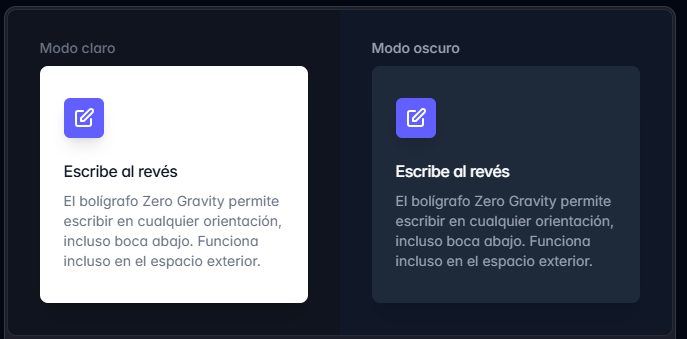 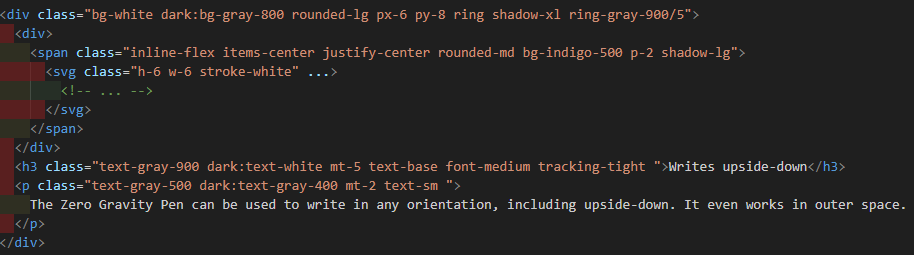
De forma predeterminada, se utiliza la función "prefers-color-scheme", sirve para colocar de forma automática el modo claro o oscuro, según las preferencias del usuario en el equipo, o según la configuración del sistema operativo o navegador, sin embargo, también nos dan la opción de crear sitios web que permitan alternar de manera manual el modo oscuro o claro. Para esto, se debe anular la variante "dark" para poder utilizar su selector personalizado
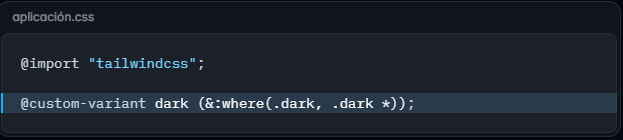Ahora, en lugar de que las utilidades "dark:" se apliquen automáticamente según la preferencia del sistema operativo (mediante el "prefers-color-scheme"), se aplicarán cada vez que la clase dark esté presente en el árbol del documento HTML. Esto significa que podemos activar el modo oscuro manualmente, añadiendo la clase “dark” al elemento html o a un contenedor principal.
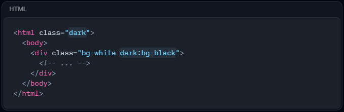Depende de nosotros la forma de agregar al elemento "html" la clase "dark", siendo un enfoque muy común usar un poco de JavaScript, para actualizar el atributo "class" y sincroniza esa preferencia en zonas como "localStorage"
Uso de un atributo de datos
Si no quieres usar una clase para activar el modo oscuro, puedes usar como una alternativa un atributo de datos, para esto, simplemente se deberá anular la variante “Dark” con el uso de un selector de atributos
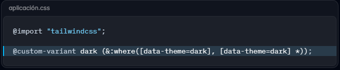Gracias a esta función, las utilidades del modo oscuro siempre se aplicarán si el atributo “data-theme” se configure en “dark”, en algún lugar del árbol
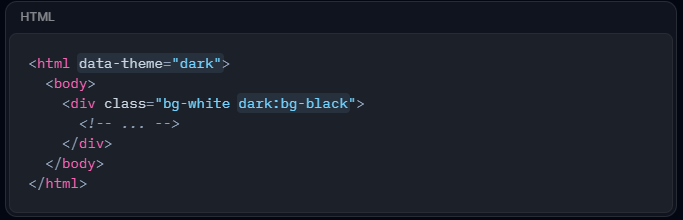Soporte para temas del sistema
Para poder crear conmutadores de rema de tres vías que permitan el modo claro, modo oscuro y el tema del sistema, se deberá de hacer uso del selector del modo oscuro customizado y la función API “window.matchMedia()” , para poder detectar el tema que posee el sistema y actualizar el elemento “html” cuando se requiera. La siguiente imagen muestra un código de ejemplo muy sencillo de como se admite el modo claro y el modo oscuro, además de respetar las preferencias del sistema operativo
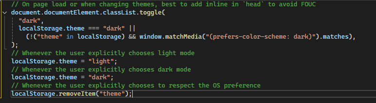Contenedores
Los contenedores son componentes que sirven para poder ajustar la anchura de un
elemento según el breakpoint actual.
Entre los usos básicos que se les puede dar a los contenedores, la clase “container”
permite establecer el valor “max-width” de un elemento para hacer que este coincida
con el valor “min-width” del breakpoint actual, permitiéndonos diseñar conjuntos
fijos de tamaños de pantallas, en vez de intentar adaptar una ventana completamente
fluida. Algo a tener en cuenta, es que los contenedores usados en Tailwind no se centran
de forma automática, y no poseen ningún tipo de relleno horizontal incorporado. Para
poder centrar un contenedor, se debe utilizar la utilidad “mx-auto”, y para agregar el
relleno horizontal de forma manual, se utiliza la utilidad “px-*”.
Codigo para Centrar Contenedor:
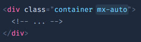Codigo para rellenar horizontalmente un contenedor:
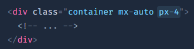Para poder centrar los contenedores de una forma predeterminada, se debe configurar, o activar la opción “center” a un estado “true” en la sección “theme.container” en los archivos de configuración
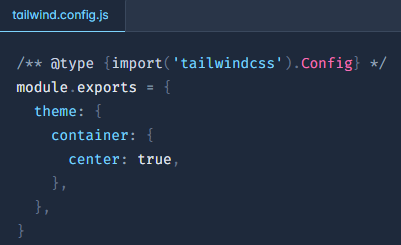Por otro lado, también podemos añadir relleno horizontal de forma predeterminada, especificando la cantidad de relleno que desea utilizar, mediante la opción “padding”, en la sección “theme.container” de los archivos de configuración.
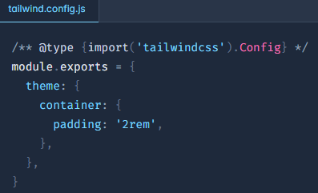Y si se busca especificar una cantidad de relleno diferente para cada breakpoint, se debe de usar un objeto para otorgar un valor “default” y cualquier override específico del breakpoint
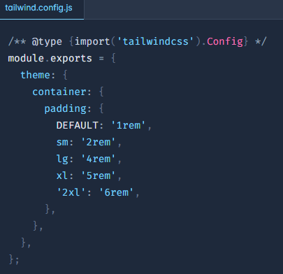
Por último, la clase “container” también posee variantes responsivas, como “md:container”, siendo esta la variante por defecto, la cual permite que algo se comporte como si fuera un contenedor en un solo breakpoint determinado y superior
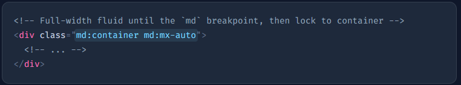